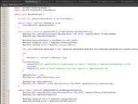

The initial challenge was to synchronize text blocks with events in the audio track. This was accomplished by applying cue points to the audio track at runtime, and checking those cue points against cue points stored in XML.
The code here is ActionScript3 (AS3), a derivative of JavaScript. The code calls to a custom library of objects which all inherit behaviors from a base class I created, EventObject.
Review portions of the code base in this PDF. The full code base is the sole property of the client. These screenshots are provided with permission of the client, and may not be redistributed.
PROJECT: Toddler Sleep/Wake Clock
I needed to create a clock that presented toddlers with the time (and proximity to the time) of waking. I designed the UI, and coded the entire app. I used AS3 and Adobe AIR to build for Android tablet supporting Android 4.0.4 (Ice Cream Sandwich), as well as iOS devices supporting iOS 7 and higher. The greatest challenge was probably the UX issue of presenting time in a meaningful way to pre-literate users who have only a rudimentary grasp of time. I resolved this after consulting with pre-school educators and toddlers themselves, and the graphical result is available in the link to the right.
From a technology perspective, I needed to meet the challenge of running a very light app that wouldn't run out battery on older tablets or phones, but would still provide animation as user feedback. Additionally, as a time-keeping app, it needed to efficiently check against the internal clock. And, of course, any app in which you are dealing with Time needs to be hardened against false results created by user interaction (for example, the user may enter the wake time by rolling the input clock forward OR backwards to display, say, 8:15 am).
The project has come successfully through two releases, and in both cases was distributed for use-testing by toddlers (and the adults who set the clocks, of course). User feedback brought the most successful changes to the UI/UX portion of the app. The code base succeeded because I put additional time into learning specifics of efficiently calling and checking time in the AIR environment for Android and iOS. Further, the power efficiency is greatly helping by instantiating all aspects of the UI and display at runtime from vector shapes with gradients. Each sprite then runs off the same routine, which is called once each frame (as opposed to once per-sprite).
I have built mobile apps for iOS and Android, primarily in the context of tablets for iOS, and both phone and tablet for Android. I have about 18 months of experience specifically building in AIR for desktop and mobile. In that project series, I developed a suite of apps that shared class objects and object hierarchy, and were deployable in modules that gained core architecture from a single instantiation of my core app.
My experience with HTML/CSS/JS started years ago. Primarily, I have developed websites and user interaction on websites. I work in HTML5/CSS3/JS now, though I won't claim to be an expert on the multitude of JS libraries I've used. I research and understand my code, but I haven't yet been required to write my own JS libraries. I am capable of writing JavaScript for game and app creation, which I find to be quite a different animal from JQuery (probably my most-used JS library beyond base JavaScript).
I educated myself in Ruby/RoR using CodeSchool and Learn Ruby the Hard Way/Ruby Koans. I have recently begun writing in C# to develop in Unity. Unity has it's own library, of course, and that's an intertwined skill. I can work more easily in JavaScript in Unity, but the majority of documentation and snippets are in C#, so ultimately it's easier for me to simply learn that.
I have also built a multi-tier distributed application suite in VB.NET, using a SQL Server backend, and serving to browser through ASP.NET. That was a few years back, though, and VB was my first language that I wrote apps in. After I learned JavaScript and ActionScript, I have yet to return to VB.NET.
I will also mention here that I have worked with 3DS Max, and also with AR/VR technology, deploying through Android and desktop. In both cases, the projects were defunded before delivery (separate clients), and never saw the light of day beyond test devices.
I really love building user interaction and games. Technologies that support that pursuit are widely varied, but I will point to things like Unity, Oculus, Virtual Reality/Augmented Reality. I am looking forward to the days when we can build user-satisfying AR experiences on mobile platforms. There are plenty of places where people are exploring this, and have been for several years, but we haven't hit upon how to use it in too many ways that users find meaningful and rewarding.
In a nutshell, a singleton is something you only instantiate once.
It has some different cases I've used it in: specifically, my core app in the software suite for WIN Interactive had to be a singleton, and this was managed by creating an external class in the constructor for the app manager. In Actionscript, class constructors are all public, so you can't define a singleton just by calling for private class Singleton().
I also was taught in Unity [C#] that the singleton is used in managing single instantiations for things like game scores, game managers, etc. and is usually accomplished by the [Serializable] tag preceding the class definition.
I have been told it is also used in user authentication and record creation, serving the same function as the record locking in SQL during UPDATE commands.
It might sound cliche, but the first thing I bring is an Open Mind. I look at challenges with the assumption that they can be overcome. This is the heart of my talent for learning new technologies and languages. I describe challenges in terms of the difficulty level, not probability of success.
In terms of practical skills, I have a decade experience in Visual Design, Human-Computer Interaction, User Interaction and User Experience. I know Adobe CS very well, and can rapidly accomplish design tasks. I have a deep experience in Type and in most visual mediums.
I have worked with large-format digital screens and the CMS's that power them, and also have created multiple forms of content for them. By 'large-format' I mean: the scoreboards at Patriot Place and Verizon Center, the exterior LED displays (80'+ in height) in Times Square, full-wall interactive displays in hospitals and multi-national corporation headquarters, etc. I have worked small, but I have also worked very, very big. I also know the world of interactive exhibits and trade-show touch tables.
Since I have worked in small companies, I'm used to being both a collaborator, and the go-to person who learns a new new technology and provides the proof-of-concept at early stages in project delivery.